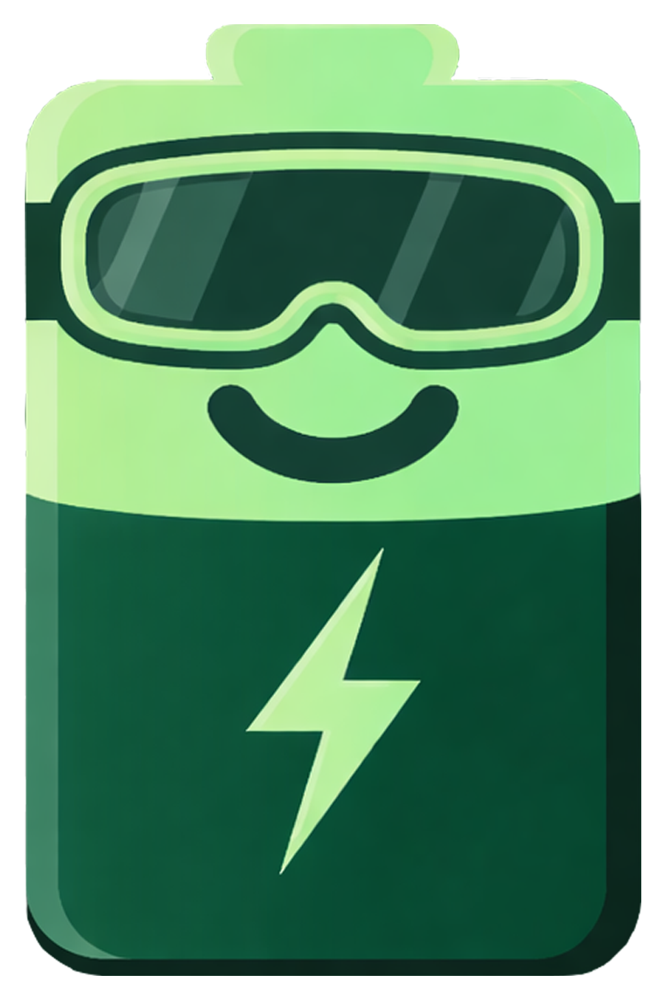

Projects
Production automation work from a year on co-op, then my own projects.
PLC, HMI & controls work
Hand-written Structured Text, operator HMIs on Beckhoff and Ignition, SQL integration, and a servo cabinet built from drawings. Shipped on a live production line.
- TwinCAT 3 · ST
- TwinCAT HMI
- Ignition
- Siemens S7
- SQL
- Panel build
-
01 · PLC + HMI
PLC Database Executor
Ground-up TwinCAT ST program that builds XML payloads from PLC data, runs SQL stored procedures and validates the response. State-machine architecture; role-aware HMI for retries.
-
02 · HMI + SQL
Material Loss Tracking
End-to-end tool to find where material was disappearing: custom Beckhoff HMI, my own stored procedures, PLC networking, and operator training I ran.
-
03 · SCADA
Line Temperature HMI
Ignition screen for a GWK temperature-control unit: live piping mimic, sequencer state, trend charts and manual heating, fed from a Siemens S7-300.
-
04 · Hardware
Servo Control Cabinet
Full cabinet rebuild from drawings with labelled wiring and Panduit routing, installed in its machine and PID-tuned with the integrator.
Personal projects
Startups, hardware and software built on my own time.
Alpine Charge

- Trailhead charging kiosks
- Municipal contract · Lions Bay
- Industrial IoT operations
Autonomous Driving

- School project
- Computer vision
- Intelligent routing